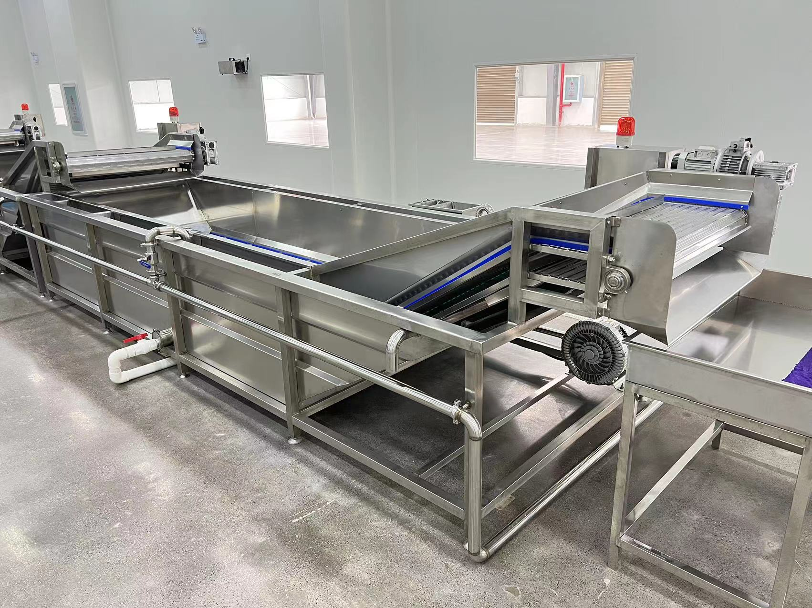
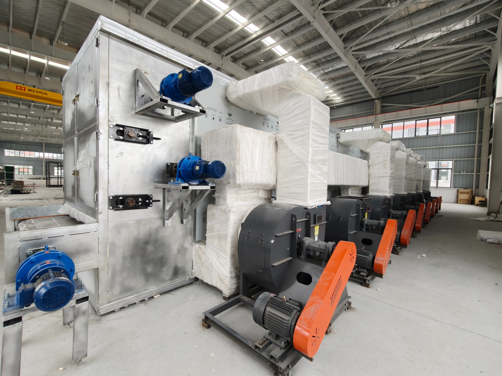
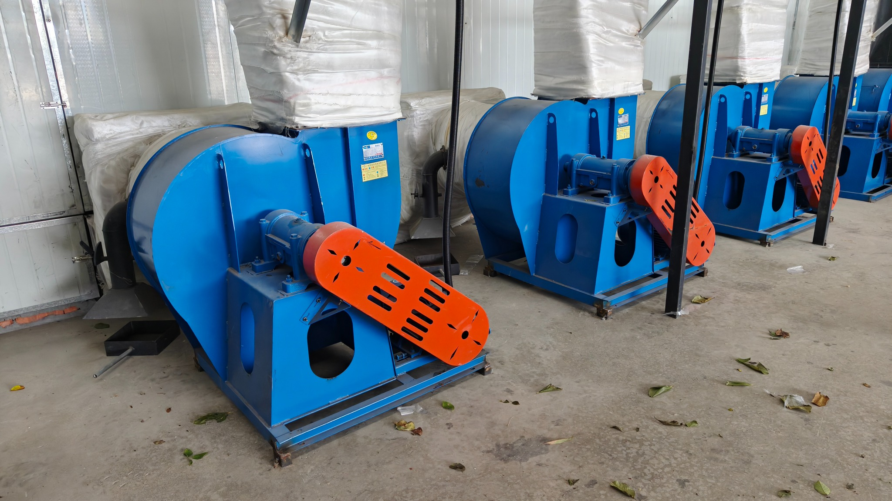
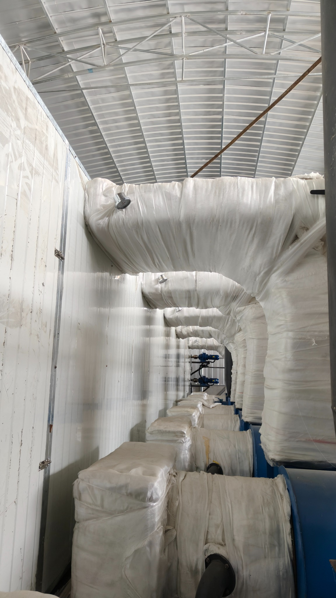
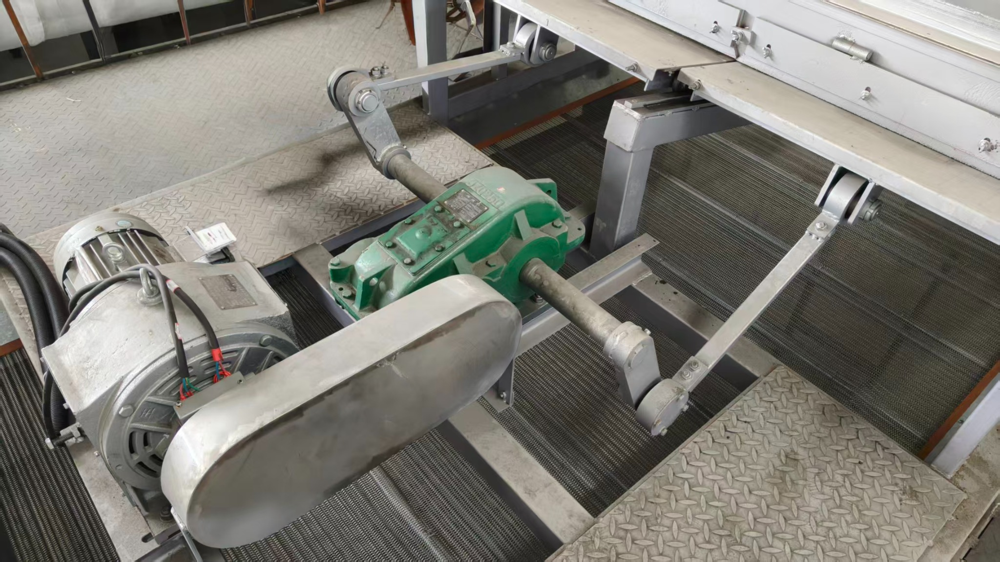
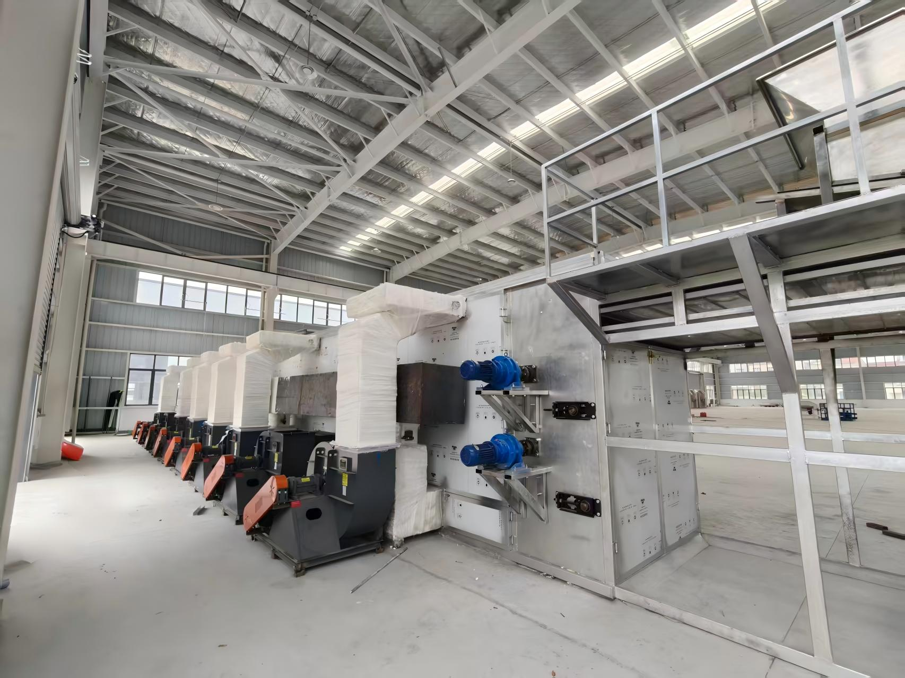

01
Konjac Ingredients
Food-grade konjac powder, refined konjac powder and konjac gum for different applications.
Request product information →Integrated solutions for konjac ingredients, drying lines, food equipment and application technology — built for food manufacturers and international partners.
Our business model connects materials, formulation, equipment and manufacturing into one practical project workflow.
Food-grade konjac powder, refined konjac powder and konjac gum for different applications.
Request product information →Konjac food machines and production-line solutions with design, manufacturing, installation and commissioning.
View equipment →System-level drying solutions for konjac dried chips, including conveying, drying and process integration.
See a line →Hydrocolloid formulation, texture improvement, water holding, stability and application development.
Talk to R&D →
ALL KONJAC combines equipment manufacturing with process planning and line integration. The goal is a workable production system that can be installed, commissioned and operated in a real factory environment.
The first website version uses the actual project photographs provided by the company. We deliberately keep retouching minimal so the engineering capability remains credible.



This project demonstrates a complete industrial drying environment: conveying, drying chambers, air handling, drive systems and multiple equipment modules working as a connected line.
The website presentation intentionally uses different crops and documentary angles rather than a heavily rendered “new factory” visual style.

The company materials show business connections across China and overseas markets. ALL KONJAC is positioned as an international-facing brand for ingredients, equipment and technology solutions.

Ingredient supply, formulation development, equipment, drying lines or a complete technical solution.